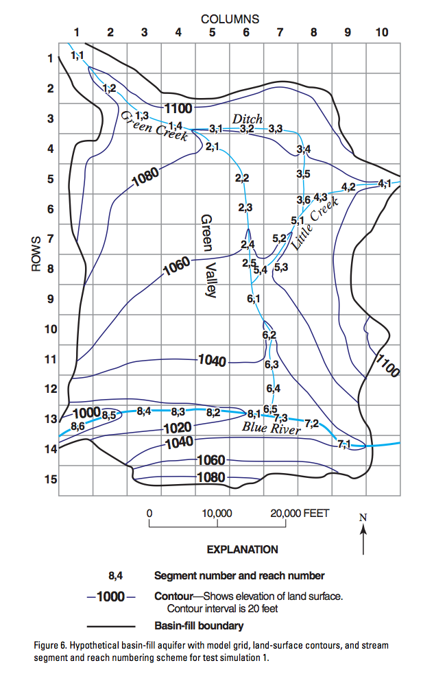
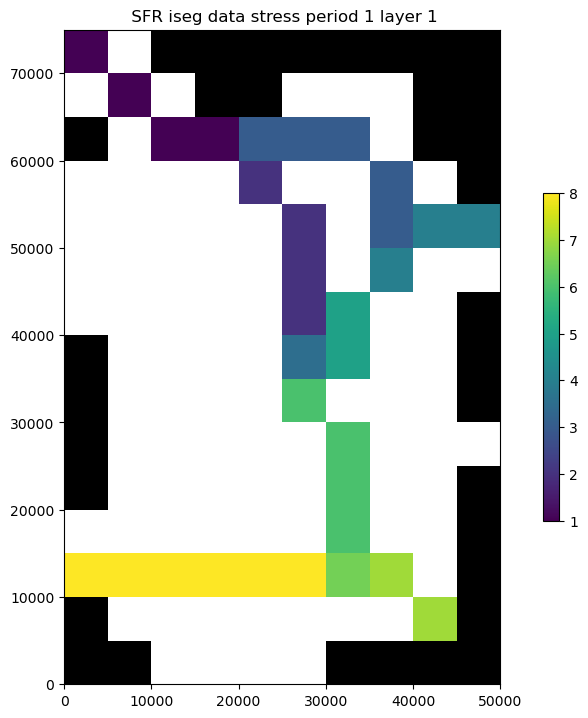
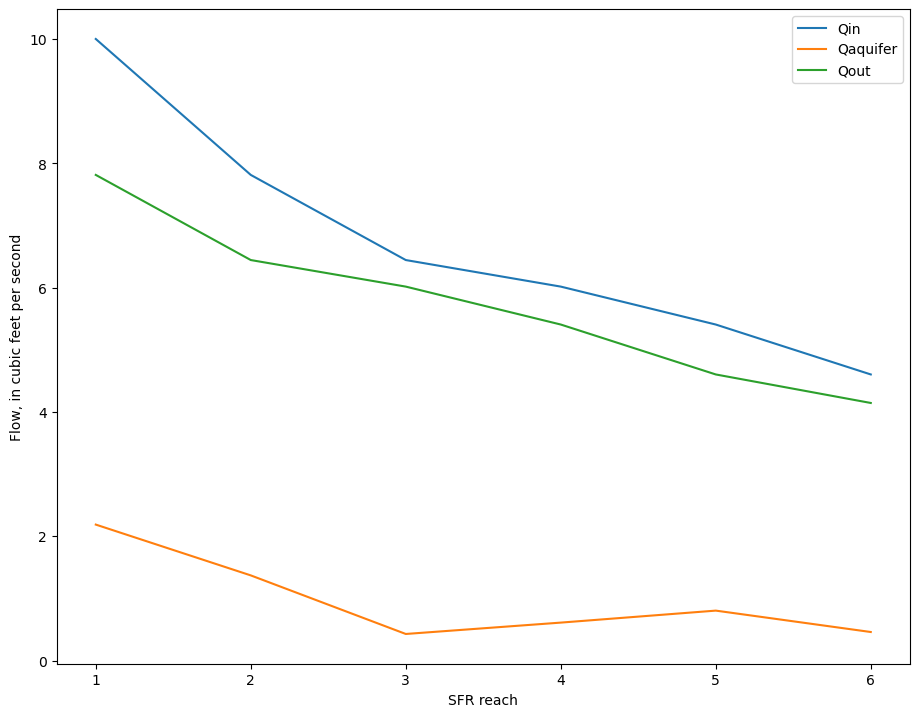
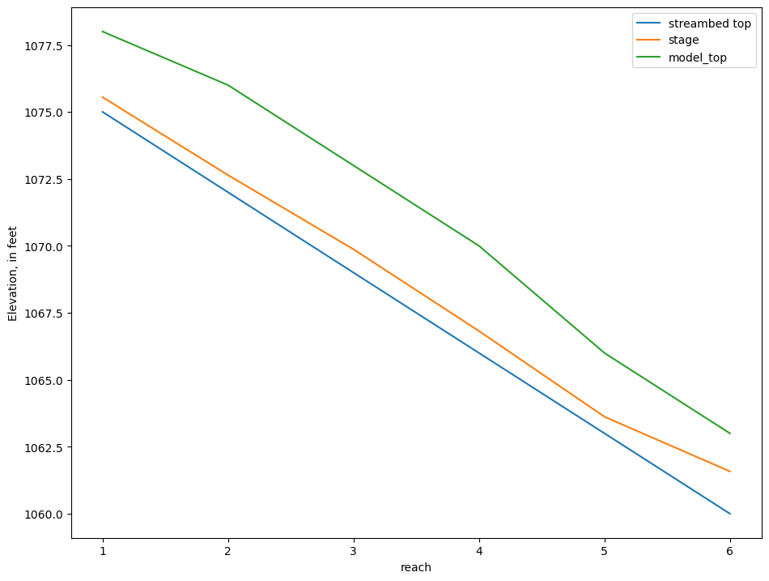
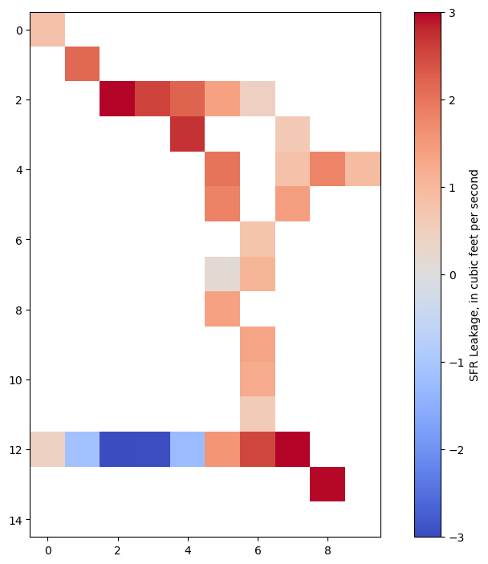
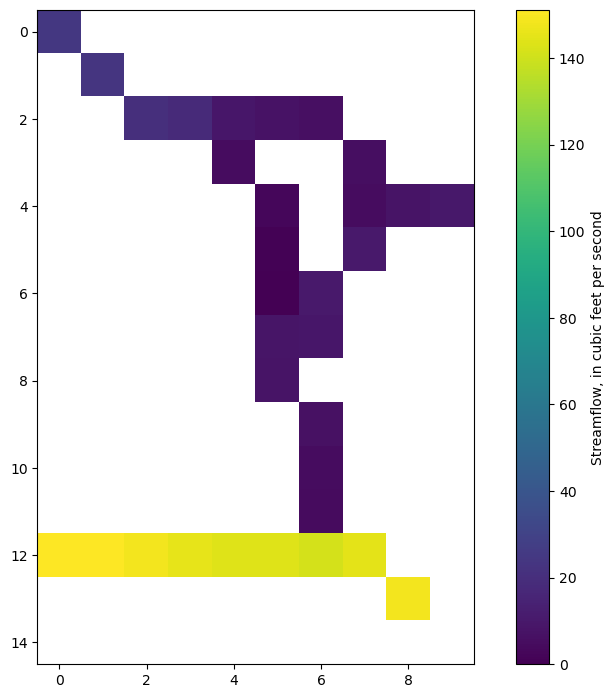

Note
SFR package Prudic and others (2004) example
Demonstrates functionality of Flopy SFR module using the example documented by Prudic and others (2004):
Problem description:
Grid dimensions: 1 Layer, 15 Rows, 10 Columns
Stress periods: 1 steady
Flow package: LPF
Stress packages: SFR, GHB, EVT, RCH
Solver: SIP

[1]:
import sys
import os
import glob
import shutil
from tempfile import TemporaryDirectory
import numpy as np
import matplotlib as mpl
import matplotlib.pyplot as plt
import pandas as pd
# run installed version of flopy or add local path
try:
import flopy
except:
fpth = os.path.abspath(os.path.join("..", ".."))
sys.path.append(fpth)
import flopy
import flopy.utils.binaryfile as bf
from flopy.utils.sfroutputfile import SfrFile
mpl.rcParams["figure.figsize"] = (11, 8.5)
print(sys.version)
print("numpy version: {}".format(np.__version__))
print("pandas version: {}".format(pd.__version__))
print("matplotlib version: {}".format(mpl.__version__))
print("flopy version: {}".format(flopy.__version__))
3.10.10 | packaged by conda-forge | (main, Mar 24 2023, 20:08:06) [GCC 11.3.0]
numpy version: 1.24.3
pandas version: 2.0.1
matplotlib version: 3.7.1
flopy version: 3.3.7
[2]:
# Set name of MODFLOW exe
# assumes executable is in users path statement
exe_name = "mf2005"
copy over the example files to the working directory
[3]:
# temporary directory
temp_dir = TemporaryDirectory()
path = temp_dir.name
gpth = os.path.join("..", "..", "examples", "data", "mf2005_test", "test1ss.*")
for f in glob.glob(gpth):
shutil.copy(f, path)
gpth = os.path.join("..", "..", "examples", "data", "mf2005_test", "test1tr.*")
for f in glob.glob(gpth):
shutil.copy(f, path)
Load example dataset, skipping the SFR package
[4]:
m = flopy.modflow.Modflow.load(
"test1ss.nam",
version="mf2005",
exe_name=exe_name,
model_ws=path,
load_only=["ghb", "evt", "rch", "dis", "bas6", "oc", "sip", "lpf"],
)
[5]:
oc = m.oc
oc.stress_period_data
[5]:
{(-1, -1): [],
(0, 0): ['print budget', 'print head', 'save head', 'save budget']}
Read pre-prepared reach and segment data into numpy recarrays using numpy.genfromtxt()
[6]:
rpth = os.path.join("..", "..", "examples", "data", "sfr_examples", "test1ss_reach_data.csv")
reach_data = np.genfromtxt(rpth, delimiter=",", names=True)
reach_data
[6]:
array([(0., 0., 0., 1., 1., 4500.), (0., 1., 1., 1., 2., 7000.),
(0., 2., 2., 1., 3., 6000.), (0., 2., 3., 1., 4., 5550.),
(0., 3., 4., 2., 1., 6500.), (0., 4., 5., 2., 2., 5000.),
(0., 5., 5., 2., 3., 5000.), (0., 6., 5., 2., 4., 5000.),
(0., 7., 5., 2., 5., 5000.), (0., 2., 4., 3., 1., 5000.),
(0., 2., 5., 3., 2., 5000.), (0., 2., 6., 3., 3., 4500.),
(0., 3., 7., 3., 4., 6000.), (0., 4., 7., 3., 5., 5000.),
(0., 5., 7., 3., 6., 2000.), (0., 4., 9., 4., 1., 2500.),
(0., 4., 8., 4., 2., 5000.), (0., 5., 7., 4., 3., 3500.),
(0., 5., 7., 5., 1., 4000.), (0., 6., 6., 5., 2., 5000.),
(0., 7., 6., 5., 3., 3500.), (0., 7., 5., 5., 4., 2500.),
(0., 8., 5., 6., 1., 5000.), (0., 9., 6., 6., 2., 5000.),
(0., 10., 6., 6., 3., 5000.), (0., 11., 6., 6., 4., 5000.),
(0., 12., 6., 6., 5., 2000.), (0., 13., 8., 7., 1., 5000.),
(0., 12., 7., 7., 2., 5500.), (0., 12., 6., 7., 3., 5000.),
(0., 12., 5., 8., 1., 5000.), (0., 12., 4., 8., 2., 5000.),
(0., 12., 3., 8., 3., 5000.), (0., 12., 2., 8., 4., 5000.),
(0., 12., 1., 8., 5., 5000.), (0., 12., 0., 8., 6., 3000.)],
dtype=[('k', '<f8'), ('i', '<f8'), ('j', '<f8'), ('iseg', '<f8'), ('ireach', '<f8'), ('rchlen', '<f8')])
Segment Data structure
Segment data are input and stored in a dictionary of record arrays, which
[7]:
spth = os.path.join("..", "..", "examples", "data", "sfr_examples", "test1ss_segment_data.csv")
ss_segment_data = np.genfromtxt(spth, delimiter=",", names=True)
segment_data = {0: ss_segment_data}
segment_data[0][0:1]["width1"]
[7]:
array([0.])
define dataset 6e (channel flow data) for segment 1
[8]:
channel_flow_data = {
0: {
1: [
[0.5, 1.0, 2.0, 4.0, 7.0, 10.0, 20.0, 30.0, 50.0, 75.0, 100.0],
[0.25, 0.4, 0.55, 0.7, 0.8, 0.9, 1.1, 1.25, 1.4, 1.7, 2.6],
[3.0, 3.5, 4.2, 5.3, 7.0, 8.5, 12.0, 14.0, 17.0, 20.0, 22.0],
]
}
}
define dataset 6d (channel geometry data) for segments 7 and 8
[9]:
channel_geometry_data = {
0: {
7: [
[0.0, 10.0, 80.0, 100.0, 150.0, 170.0, 240.0, 250.0],
[20.0, 13.0, 10.0, 2.0, 0.0, 10.0, 13.0, 20.0],
],
8: [
[0.0, 10.0, 80.0, 100.0, 150.0, 170.0, 240.0, 250.0],
[25.0, 17.0, 13.0, 4.0, 0.0, 10.0, 16.0, 20.0],
],
}
}
Define SFR package variables
[10]:
nstrm = len(reach_data) # number of reaches
nss = len(segment_data[0]) # number of segments
nsfrpar = 0 # number of parameters (not supported)
nparseg = 0
const = 1.486 # constant for manning's equation, units of cfs
dleak = 0.0001 # closure tolerance for stream stage computation
ipakcb = 53 # flag for writing SFR output to cell-by-cell budget (on unit 53)
istcb2 = 81 # flag for writing SFR output to text file
dataset_5 = {0: [nss, 0, 0]} # dataset 5 (see online guide)
Instantiate SFR package
Input arguments generally follow the variable names defined in the Online Guide to MODFLOW
[11]:
sfr = flopy.modflow.ModflowSfr2(
m,
nstrm=nstrm,
nss=nss,
const=const,
dleak=dleak,
ipakcb=ipakcb,
istcb2=istcb2,
reach_data=reach_data,
segment_data=segment_data,
channel_geometry_data=channel_geometry_data,
channel_flow_data=channel_flow_data,
dataset_5=dataset_5,
unit_number=15,
)
[12]:
sfr.reach_data[0:1]
[12]:
rec.array([(0, 0, 0, 0, 1, 1, 4500., 0., 0., 0., 0., 0., 0., 0., 0., 1, 2)],
dtype=[('node', '<i8'), ('k', '<i8'), ('i', '<i8'), ('j', '<i8'), ('iseg', '<i8'), ('ireach', '<i8'), ('rchlen', '<f4'), ('strtop', '<f4'), ('slope', '<f4'), ('strthick', '<f4'), ('strhc1', '<f4'), ('thts', '<f4'), ('thti', '<f4'), ('eps', '<f4'), ('uhc', '<f4'), ('reachID', '<i8'), ('outreach', '<i8')])
Plot the SFR segments
any column in the reach_data array can be plotted using the key argument
[13]:
sfr.plot(key="iseg");

Check the SFR dataset for errors
[14]:
chk = sfr.check()
passed.
Checking for continuity in segment and reach numbering...
passed.
Checking for increasing segment numbers in downstream direction...
passed.
Checking for circular routing...
passed.
Checking reach connections for proximity...
0 segments with non-adjacent reaches found.
At segments:
0 segments with non-adjacent reaches found.
At segments:
Checking for model cells with multiple non-zero SFR conductances...
3 model cells with multiple non-zero SFR conductances found.
This may lead to circular routing between collocated reaches.
Nodes with overlapping conductances:
k i j iseg ireach rchlen strthick strhc1
0 7 5 2 5 5000.0 3.0 2.9999999242136255e-05
0 5 7 3 6 2000.0 2.0 2.9999999242136255e-05
0 5 7 4 3 3500.0 3.0 2.9999999242136255e-05
0 5 7 5 1 4000.0 3.0 2.9999999242136255e-05
0 7 5 5 4 2500.0 3.0 2.9999999242136255e-05
0 12 6 6 5 2000.0 3.0 2.9999999242136255e-05
0 12 6 7 3 5000.0 3.0 5.999999848427251e-05
Checking for streambed tops of less than -10...
strtop not specified for isfropt=0
passed.
Checking for streambed tops of greater than 15000...
strtop not specified for isfropt=0
passed.
Checking segment_data for downstream rises in streambed elevation...
passed.
Checking reach_data for downstream rises in streambed elevation...
Reach strtop not specified for nstrm=36, reachinput=False and isfropt=0
passed.
Checking reach_data for inconsistencies between streambed elevations and the model grid...
Reach strtop, strthick not specified for nstrm=36, reachinput=False and isfropt=0
passed.
Checking segment_data for inconsistencies between segment end elevations and the model grid...
passed.
Checking for streambed slopes of less than 0.0001...
slope not specified for isfropt=0
passed.
Checking for streambed slopes of greater than 1.0...
slope not specified for isfropt=0
passed.
[15]:
m.external_fnames = [os.path.split(f)[1] for f in m.external_fnames]
m.external_fnames
[15]:
['test1ss.sg1',
'test1ss.sg2',
'test1ss.sg3',
'test1ss.sg4',
'test1ss.sg5',
'test1ss.sg6',
'test1ss.sg7',
'test1ss.sg8',
'test1ss.dvsg9']
[16]:
m.write_input()
[17]:
success, buff = m.run_model(silent=True, report=True)
if success:
for line in buff:
print(line)
else:
raise ValueError("Failed to run.")
MODFLOW-2005
U.S. GEOLOGICAL SURVEY MODULAR FINITE-DIFFERENCE GROUND-WATER FLOW MODEL
Version 1.12.00 2/3/2017
Using NAME file: test1ss.nam
Run start date and time (yyyy/mm/dd hh:mm:ss): 2023/05/04 16:09:00
Solving: Stress period: 1 Time step: 1 Ground-Water Flow Eqn.
Run end date and time (yyyy/mm/dd hh:mm:ss): 2023/05/04 16:09:00
Elapsed run time: 0.009 Seconds
Normal termination of simulation
Load SFR formated water balance output into pandas dataframe using the SfrFile class
requires the pandas library
[18]:
sfr_outfile = os.path.join("..", "..", "examples", "data", "sfr_examples", "test1ss.flw")
sfrout = SfrFile(sfr_outfile)
df = sfrout.get_dataframe()
df.head()
[18]:
| layer | row | column | segment | reach | Qin | Qaquifer | Qout | Qovr | Qprecip | Qet | stage | depth | width | Cond | gradient | kstpkper | k | i | j | |
|---|---|---|---|---|---|---|---|---|---|---|---|---|---|---|---|---|---|---|---|---|
| 0 | 1 | 1 | 1 | 1 | 1 | 25.0000 | 0.7923 | 24.2080 | 0.0 | 0.0 | 0.0 | 1094.22 | 1.174 | 12.98 | 0.5843 | 0.4520 | (0, 0) | 0 | 0 | 0 |
| 1 | 1 | 2 | 2 | 1 | 2 | 24.2080 | 2.1408 | 22.0670 | 0.0 | 0.0 | 0.0 | 1089.21 | 1.152 | 12.68 | 0.8878 | 0.8038 | (0, 0) | 0 | 1 | 1 |
| 2 | 1 | 3 | 3 | 1 | 3 | 22.0670 | 2.9909 | 19.0760 | 0.0 | 0.0 | 0.0 | 1083.53 | 1.110 | 12.13 | 0.7278 | 1.3700 | (0, 0) | 0 | 2 | 2 |
| 3 | 1 | 3 | 4 | 1 | 4 | 19.0760 | 2.5538 | 16.5220 | 0.0 | 0.0 | 0.0 | 1078.47 | 1.064 | 11.32 | 0.6285 | 1.3550 | (0, 0) | 0 | 2 | 3 |
| 4 | 1 | 4 | 5 | 2 | 1 | 6.5222 | 2.7058 | 3.8163 | 0.0 | 0.0 | 0.0 | 1072.40 | 0.469 | 12.00 | 0.7800 | 1.1560 | (0, 0) | 0 | 3 | 4 |
Plot streamflow and stream/aquifer interactions for a segment
[19]:
inds = df.segment == 3
print(df.reach[inds].astype(str))
# ax = df.ix[inds, ['Qin', 'Qaquifer', 'Qout']].plot(x=df.reach[inds])
ax = df.loc[inds, ["reach", "Qin", "Qaquifer", "Qout"]].plot(x="reach")
ax.set_ylabel("Flow, in cubic feet per second")
ax.set_xlabel("SFR reach");
9 1
10 2
11 3
12 4
13 5
14 6
Name: reach, dtype: object

Look at stage, model top, and streambed top
[20]:
streambed_top = m.sfr.segment_data[0][m.sfr.segment_data[0].nseg == 3][
["elevup", "elevdn"]
][0]
streambed_top
[20]:
(1075., 1060.)
[21]:
df["model_top"] = m.dis.top.array[df.row.values - 1, df.column.values - 1]
fig, ax = plt.subplots()
plt.plot([1, 6], list(streambed_top), label="streambed top")
# ax = df.loc[inds, ['stage', 'model_top']].plot(ax=ax, x=df.reach[inds])
ax = df.loc[inds, ["reach", "stage", "model_top"]].plot(ax=ax, x="reach")
ax.set_ylabel("Elevation, in feet")
plt.legend();

Get SFR leakage results from cell budget file
[22]:
bpth = os.path.join(path, "test1ss.cbc")
cbbobj = bf.CellBudgetFile(bpth)
cbbobj.list_records()
(1, 1, b' STREAM LEAKAGE', 10, 15, 1, 0, 0., 0., -1., b'', b'', b'', b'')
[23]:
sfrleak = cbbobj.get_data(text=" STREAM LEAKAGE")[0]
sfrleak[sfrleak == 0] = np.nan # remove zero values
Plot leakage in plan view
[24]:
im = plt.imshow(
sfrleak[0], interpolation="none", cmap="coolwarm", vmin=-3, vmax=3
)
cb = plt.colorbar(im, label="SFR Leakage, in cubic feet per second");

Plot total streamflow
[25]:
sfrQ = sfrleak[0].copy()
sfrQ[sfrQ == 0] = np.nan
sfrQ[df.row.values - 1, df.column.values - 1] = (
df[["Qin", "Qout"]].mean(axis=1).values
)
im = plt.imshow(sfrQ, interpolation="none")
plt.colorbar(im, label="Streamflow, in cubic feet per second");

Reading transient SFR formatted output
the SfrFile class handles this the same way
files for the transient version of the above example were already copied to the data folder in the third cell above first run the transient model to get the output:
>mf2005 test1tr.nam
[26]:
flopy.run_model(exe_name, "test1tr.nam", model_ws=path, silent=True)
[26]:
(True, [])
[27]:
sfrout_tr = SfrFile(os.path.join(path, "test1tr.flw"))
dftr = sfrout_tr.get_dataframe()
dftr.head()
[27]:
| layer | row | column | segment | reach | Qin | Qaquifer | Qout | Qovr | Qprecip | Qet | stage | depth | width | Cond | gradient | kstpkper | k | i | j | |
|---|---|---|---|---|---|---|---|---|---|---|---|---|---|---|---|---|---|---|---|---|
| 0 | 1 | 1 | 1 | 1 | 1 | 25.0000 | 0.77759 | 24.2220 | 0.0 | 0.0 | 0.0 | 1094.22 | 1.1740 | 12.98 | 0.5843 | 0.4436 | (0, 0) | 0 | 0 | 0 |
| 1 | 1 | 2 | 2 | 1 | 2 | 24.2220 | 2.21540 | 22.0070 | 0.0 | 0.0 | 0.0 | 1089.21 | 1.1510 | 12.68 | 0.8875 | 0.8321 | (0, 0) | 0 | 1 | 1 |
| 2 | 1 | 3 | 3 | 1 | 3 | 22.0070 | 2.98700 | 19.0200 | 0.0 | 0.0 | 0.0 | 1083.53 | 1.1090 | 12.12 | 0.7270 | 1.3700 | (0, 0) | 0 | 2 | 2 |
| 3 | 1 | 3 | 4 | 1 | 4 | 19.0200 | 2.54940 | 16.4710 | 0.0 | 0.0 | 0.0 | 1078.47 | 1.0630 | 11.31 | 0.6275 | 1.3540 | (0, 0) | 0 | 2 | 3 |
| 4 | 1 | 4 | 5 | 2 | 1 | 6.4706 | 2.70370 | 3.7669 | 0.0 | 0.0 | 0.0 | 1072.40 | 0.4663 | 12.00 | 0.7800 | 1.1550 | (0, 0) | 0 | 3 | 4 |
plot Qout (simulated streamflow) and Qaquifer (simulated stream leakage) through time
[28]:
fig, axes = plt.subplots(2, 1, sharex=True)
dftr8 = dftr.loc[(dftr.segment == 8) & (dftr.reach == 5)]
dftr8.Qout.plot(ax=axes[0])
axes[0].set_ylabel("Simulated streamflow, cfs")
dftr8.Qaquifer.plot(ax=axes[1])
axes[1].set_ylabel("Leakage to aquifer, cfs");

[29]:
try:
# ignore PermissionError on Windows
temp_dir.cleanup()
except:
pass